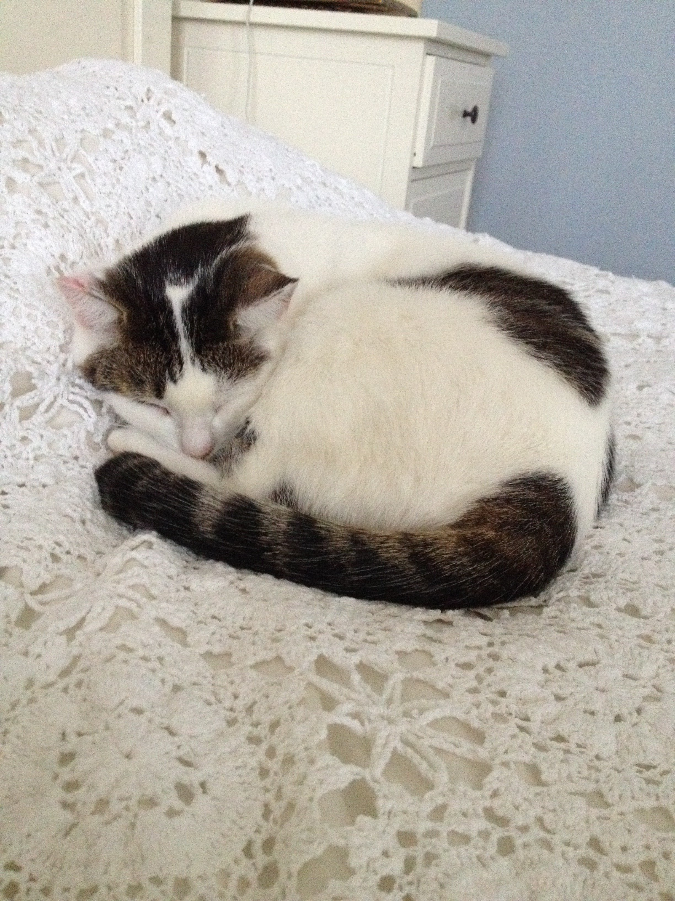
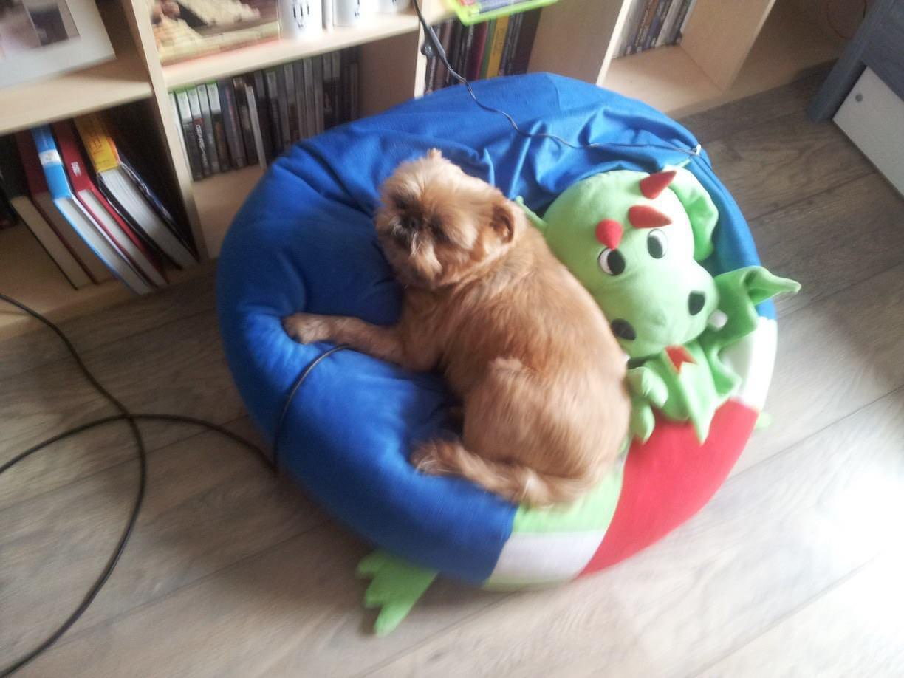

Deze pagina gaat over mijn huisdieren die helaas overleden zijn. De twee overleden huisdieren hier zijn Ofelia en Cziko. Het waren geweldige huisdieren en ik zou alles doen om ze weer terug te krijgen.
Ofelia is de eerste kat die ik ooit gehad heb. Ze was wit van kleur met een zwarte staart en een beetje zwart op haar lichaam en hoofd. Ik kreeg haar toen ik 10 jaar oud was en zij was toen ongeveer 5 jaar oud. We weten niet precies hoe oud ze was, omdat ze geen huis had en gered werd uit een bosje. Deze levensstijl heeft waarschijnlijk ook voor haar jonge dood gezorgd. Ze woonde in een bosje in Polen helemaal alleen. Een oudere man heeft haar toen gevonden en gaf haar eten en drinken om te overleven. De man heeft haar Ofelia genoemd en dit is ook hoe wij haar noemden. Uiteindelijk werd ze gered en wij hebben haar toen geadopteerd. Toen ik haar kreeg was ze heel mager, maar snel hebben wij haar geholpen. Ze woonde een paar jaar in onze oude huis, maar toen moest zij voor een paar maanden bij mijn oma wonen. Uiteindelijk hebben wij haar weer meegenomen naar een nieuwe huis. Later kregen wij ook Senegal en de twee katten gingen super goed met elkaar om. Ofelia overleed op een leeftijd van ongeveer 10 jaar oud aan een nierziekte.
Cziko is een hond. Hij is de eerste huisdier die ik gehad hebt. Hij werd geadopteerd toen ik ongeveer een of twee jaar oud was. Zijn naam is een verwijzing naar het Spaanse woord "Chico", maar dan in het Pools geschreven. We kregen hem toen wij nog steeds in Polen woonden en hij kwam met ons mee naar Nederland. Cziko was altijd al een leuke hond waar we altijd grapjes over maakten. Later verhuisden wij weer en kregen wij de honden Luna en Snoopy. Snoopy is uiteindelijk weggegaan naar een ander huis, maar Luna is gebleven. De twee honden vormden heel snel een vriendschap met elkaar. Na een paar jaar verhuisde mijn oma om alleen te wonen en nam ze Cziko en Luna mee. Ik kreeg toen Ofelia. Samen met mijn oma en Luna leefde hij een lang leven en overleed hij aan een hartziekte op 13 jaar oud.